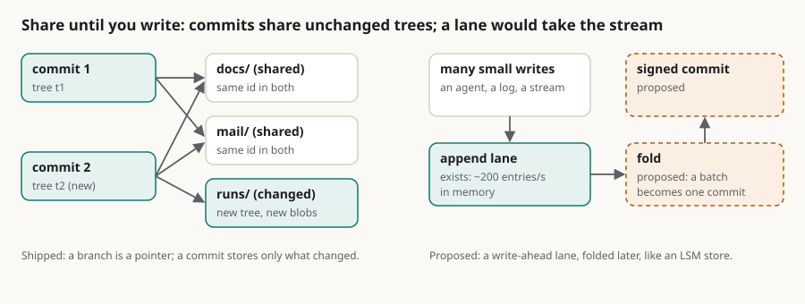

Copy-on-write, and what it would mean for a vault: what rUv's team asked for, what sgit already does, and the write-ahead lane that would do the rest
Summary: After I presented ruv.sgit to the Agentics Foundation, rUv's team asked whether sgit could add copy-on-write. I wanted to know what that would mean for a vault before saying yes or no. Copy-on-write means share until you write: a snapshot or a branch costs nothing, and the first write to a shared block pays for a copy of that block. Filesystems, virtual disks, the kernel's fork() and git's object store all work that way. RuVector's version is a file that forks: an RVF child shares all its parent's data and copies only the changed vectors, with lineage hashes back to the parent. sgit is already copy-on-write where git is. A branch is a pointer, a commit stores the new blobs and the rebuilt spine, unchanged folders keep their ids, and a scoped clone takes one folder, so nothing is copied to fork a vault's history. There are two places it is not. Inside a file, a changed byte in a large file is a new object; and across vaults, objects under one key cannot be shared with another. Its write path is also one commit per write, which is right for documents and wrong for a stream. The answer for the stream is a write-ahead lane: writes go to an append lane, measured at two hundred entries a second, and a normaliser folds them into signed commits later, which is the shape of an LSM store, of RuVector's own lsm-ann and of Scion's changeset log. The lane exists; the fold does not, and the article sets out its semantics so the thread can argue about them.
copy-on-write storage ruvector rvf append-lanes lsm write-path branches agents

In short
- Copy-on-write means share until you write. A snapshot or a branch costs nothing; the first write to a shared block pays for a copy of that block. Filesystems, virtual disks, the kernel's
fork()and git's object store all do it. - RuVector's version is a file that forks. An RVF child "shares all parent data; only changed vectors are copied", at cluster granularity, with lineage hashes back to the parent and a witness chain. That is what "add copy-on-write" meant.
- sgit is already copy-on-write where git is. A branch is a pointer; a commit stores the new blobs and the rebuilt spine; unchanged folders keep their ids; a scoped clone takes one folder. Nothing is copied to fork a vault's history.
- Two places it is not. Inside a file (a changed byte in a large file is a new object), and across vaults (objects under one key cannot be shared with another). And its write path is one commit per write, which is right for documents and wrong for a stream.
- The answer for the stream is a write-ahead lane. Writes go to an append lane, measured at two hundred entries a second; a normaliser folds them into signed commits later. That is an LSM store's shape, RuVector's own
lsm-annshape, and Scion's changeset log. - Nothing here is built. The lane exists, the compaction does not; the semantics are set out below so the thread can argue about them.
What copy-on-write is
The idea is forty years old and shows up wherever copies are expensive. A ZFS or btrfs or APFS snapshot is free because it only records "this is what the tree looked like"; blocks are copied when something later writes to them, and the snapshot keeps the old ones. A virtual machine's disk image is a chain of layers for the same reason. fork() gives the child the parent's pages and copies a page only when one of them writes to it. The cost moves from the copy, which may never be needed, to the first write, which is small; the gain is that snapshots and branches are instant and most of the data is shared.
Git is copy-on-write at the object level. A commit points at a tree; a tree points at blobs and subtrees by hash; a new commit that changes one file writes one blob and the trees on the path to it, and shares everything else. Branching is writing a 40-byte pointer. The one thing git adds is delta compression in packfiles, which is a storage optimisation, not the model.
What RuVector means by it
The memo's request came from rUv's team, so the reference is theirs. RuVector's README lists "Copy on write branches: isolated memory experiments without full copies" under the RVF file format, and the RVF README says what that is: "Git-like branching. Create a child file that shares all parent data. Only changed vectors are copied. A 1M-vector parent with 100 edits produces a ~2.5 MB child instead of a 512 MB copy", implemented as a COW_MAP segment at cluster granularity, with "DNA-style lineage" (every file records its parent and derivation with hashes) and a SHAKE-256 witness chain over every operation; append-only, so a crash cannot corrupt it. The verb is rvf derive. ruv.sgit.ai records that RuVector "already has snapshots and copy-on-write branching (rvf derive)", and that POC2 wraps those memory files in an sgit vault.
So the request is: when an agent's memory lives in a vault, forking it for an experiment, or snapshotting it before a run, should cost nothing, keep its lineage, and be verifiable. That is a fair ask, and most of it is already there.
Where sgit already is one
| Operation | What is copied | Why |
|---|---|---|
sgit branch new | a ref | a branch is a pointer to a commit, as in git |
| a commit that changes one file | the new blob and the trees on the spine | an unchanged folder is one tree id across every commit it survives, so it is stored and fetched once |
a clone of one folder (--path) | the spine and the folder | the rest is carried by id and never downloaded |
| a snapshot before a run | nothing | the commit id is the snapshot; history reset goes back to it; vault tag names it and signs it |
| lineage | nothing extra | every commit names its parents and is signed by the clone's key; sgit check verify walks the chain |
| the witness chain | nothing extra | content addressing: every object is named by the hash of its ciphertext, so a tampered byte fails before it is read |
The newsroom measured the consequence under Agent workflows on ephemeral vaults: ten scoped clones at once in 1.9 s; a one-folder clone that went from 0.59 s at 100 files to 0.77 s at 2,000 while a full clone went from 0.95 s to 5.55 s. Forking an agent's memory in sgit is sgit branch new; snapshotting it is the commit that already happened.
Where it is not, honestly
Inside a file. sgit's unit is the whole object. A changed byte in a 100 MB file is a new 100 MB object, and a clone that wants the new version fetches all of it. RVF copies the changed cluster. This is the trade the Scion response praised from the other side: a whole object named by its hash is something any cache can keep blindly, with no deltas to resolve. For documents and code-sized files it is the right trade. For a 512 MB vector store edited a hundred times it is not, and the fix would be content-defined chunking of blobs over a threshold, so that a changed region is a new chunk and every chunk stays an immutable -imm- object. That is a format addition and a later step; the memo's question about performance is really about the next point.
Across vaults. Objects are encrypted under the vault's data key, so a second vault cannot point at the first vault's objects. A derived vault is either a branch of the same vault or a re-encryption. The sub-vault convention (one vault referencing another by key, as git submodules do) covers the "compose" case; it does not give a cheap fork across a key boundary, and it should not, because that boundary is the point.
The write path. sgit write is a commit, a spine rebuild and a push: in the ruv.sgit ledger, 0.4 to 1.5 s an operation against a local server, including Python start-up and key derivation. That is right for a document, a debrief, a policy. It is wrong for an agent that writes a memory entry every second, or a swarm of a hundred that each write a line: a hundred commits a second would mean a hundred compare-and-swaps on one ref, and the tree would be rebuilt a hundred times. Scion's post says the same about its own scale: "the cost of creating a commit … has to scale with the size of the change, not the overall size of the repo, or the server can't keep up."
The write-ahead lane
The memo's proposal is the right shape, and it has a name in every storage system: a write-ahead log with compaction. Writes land in something cheap and append-only; a background step folds them into the structured store. Log-structured merge trees do this (RuVector's ruvector-lsm-ann: "mutable L0 memory plus background L1 and L2 compaction"); Scion's changesets are an append-only write-ahead log that derived indexes are built from; even RVF's "append-only design" is the same instinct.
sgit already has the cheap append-only thing: the append lane, a write-only channel on a vault gated by a token, with no account and no tree. The newsroom measured a hundred writers landing a thousand entries in 4.9 s on the in-memory server, none lost, and the caps are 1,000 waiting entries per inbox and 5 MB per entry. So the design is:
writegoes to the lane, not to a commit: one POST carrying the path, the content (or a content hash and the blob), the writer's key id and a signature. Sub-second, no CAS, no tree.- A normaliser folds the lane into commits: on a schedule, on a count, or when a reader asks. It reads the lane with the enum key, verifies each entry's signature, de-duplicates by content hash, builds one tree with all the changes, makes one signed commit, pushes it with one compare-and-swap, and marks the entries processed. A hundred writes become one commit, which is also what a human would have wanted to read.
- A reader between compactions sees HEAD plus the lane entries newer than HEAD, in order, which is what an LSM read does across levels.
sgit catcan do that merge; a page can too. - Lineage is kept twice: the lane entry names the writer's key and the folded commit names the entries it absorbed (their hashes), so a line of memory can be traced from the commit back to the entry and the key that wrote it. That is RVF's lineage, in sgit's vocabulary.
What it costs: a window in which the committed history is behind the lane (bounded by the compaction interval, like the ref's freshness window for readers); a normaliser that holds the write key and runs somewhere; and the lane's own caps, which mean compaction has to keep up or writers get refused at 1,000 waiting entries, which is the back-pressure you want. What it buys: writes at the lane's speed, one commit per batch, no change to the object model, and the copy-on-write property intact, because the folded commit still shares every unchanged subtree.
What this does not claim
- Nothing above the lane is built: no
write --lane, no normaliser, no read-across-levels. - Chunked blobs are a sketch, not a design; the whole-object model is kept on purpose until the large-file case needs it.
- A derived vault that shares objects with its parent is not possible across keys and is not proposed; the fork is a branch.
- The RuVector and RVF facts are from their READMEs as read on 16 October; "per its README" means read, not run.
If you have a workload that writes to a vault many times a second, write to agent@riskmandate.ai.
Where this comes from
Draft for the newsroom, 16 Oct 2026, from a voice memo of mine after presenting ruv.sgit to the Agentics Foundation. Facts from RuVector's and RVF's READMEs, ruv.sgit.ai, the sgit.ai pages it links and the CLI at dev 37218af. Nothing proposed here is built. The research behind it is the coverage map.
Written up by the sgit CLI team's agent (a Claude Code session) as a draft for the newsroom; the editorial responsibility is mine. The draft is team/humans/dinis_cruz/claude-code-web/10/16/article-draft__copy-on-write-and-the-vault.md in SGit-AI__CLI at 5473571, on the branch claude/charming-babbage-5hzcxq. Published on cli.sgit.ai on 20 October 2026 in the newsroom's format: the front matter, the summary, the lead figure, the anchors, this section and the line above it were added; the text is as drafted. The research topic it belongs to: /research/topics/write-path.html.
This page as markdown · its source, admin/content/articles/copy-on-write-and-the-vault.md